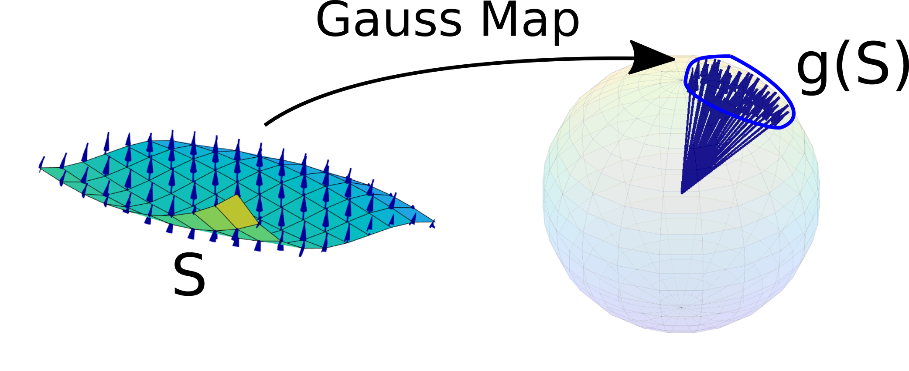

Surfaces are two-parameter geometric objects. They are used to represent freeform shapes such as car bodies, aircraft wings, turbine blades, architectural forms and consumer-product surfaces.
Parametric Representation
A parametric surface is represented as
where $u$ and $v$ are parameters.
For example, a sphere of radius $R$ may be represented by
where
A tensor-product Bezier surface is
A tensor-product B-spline surface is
where $N_{m,i}$ and $M_{\ell,j}$ are B-spline basis functions in the $u$ and $v$ directions respectively.
Differential Geometry of Surfaces
A surface may be represented parametrically as
or implicitly as
In CAD, parametric representation is especially important because most surface patches are constructed using two parameters \(u\) and \(v\).
Tangents and Tangent Plane
Let \(P\) be a point on the surface \(S\), and let \(\alpha(s)\) be a curve drawn on the surface passing through \(P\). Suppose \(s\) is the arc length parameter of this curve.
Since \(\alpha(s)\) lies on the surface, it may be written as
Differentiating with respect to \(s\), we get
Using the notation
the tangent vector becomes
Thus, every tangent vector to a curve on the surface can be written as a linear combination of \(\mathbf r_u\) and \(\mathbf r_v\).
First Fundamental Form
The first fundamental form describes how lengths and angles are measured on a surface.
For a small displacement on the surface,
The squared differential length is
Therefore,
Define
Then
In matrix form,
The matrix
is called the first fundamental matrix or metric matrix.
Its determinant is
Surface Normal and Area Element
The unit normal vector to the surface is
Using the vector identity
we get
Therefore,
Hence,
The differential area element is
Second Fundamental Form
The first fundamental form measures the intrinsic geometry of the surface. To describe how the surface bends in three-dimensional space, we use the second fundamental form.
Let \(\mathbf r\) be a point on the surface and let \(\mathbf r+d\mathbf r\) be a neighboring point. The signed distance of the neighboring point from the tangent plane is, to second order,
Define
Then the second fundamental form is
The second fundamental matrix is
Its determinant is
Normal Curvature
Let \(\alpha(s)\) be a curve on the surface and let
be its unit tangent vector.
The curvature vector of the curve is
This vector can be decomposed into a component normal to the surface and a component tangent to the surface:
Here \(\mathbf k_n\) is the normal curvature component and \(\mathbf k_g\) is the geodesic curvature component.
The normal curvature is
It can be expressed as the ratio of the second and first fundamental forms:
Principal Curvatures
The principal curvatures are the maximum and minimum values of the normal curvature at a point on the surface.
Let
Then
Extremizing \(\kappa_n\) with respect to the direction \(x\) leads to the characteristic equation
Let the two roots be
These are the principal curvatures.
The mean curvature is
The Gaussian curvature is
Derivative of the Normal and Gaussian Curvature
The derivatives of the unit normal vector lie in the tangent plane. Therefore,
and
By taking inner products with \(\mathbf r_u\) and \(\mathbf r_v\), one obtains
and
These relations connect changes in the surface normal to the first and second fundamental forms.
Taking the cross product gives
Therefore,
This also leads to the geometric interpretation
with sign determined by orientation.
Gauss Map
At each regular point \(P\) on a surface, the unit normal vector
defines a point on the unit sphere. The map that sends each surface point to its corresponding unit normal direction is called the Gauss map.

Gaussian curvature measures the local area distortion produced by the Gauss map. Informally,
More precisely, for a sufficiently small region \(S\),
measures the signed area of its image under the Gauss map.
Classification of Surface Points
A point \(P\) on a surface is called regular if
At a regular point, the tangent plane and unit normal are well defined.
Surface points may be classified using Gaussian curvature:
| Condition | Type of Point |
|---|---|
| \(K>0\) | Elliptic point. The surface is locally dome-like, as on a sphere. |
| \(K=0\) | Parabolic point. The surface is locally developable in one direction, as on a cylinder. |
| \(K<0\) | Hyperbolic point. The surface is locally saddle-like. |
Gauss–Bonnet Theorem and Theorema Egregium
The Gauss–Bonnet theorem relates the total Gaussian curvature of a surface to its topology. In broad terms, it connects geometry with the Euler characteristic of the surface.
Gauss's Theorema Egregium states that Gaussian curvature is invariant under local isometry. This means that Gaussian curvature can be determined entirely from measurements made on the surface itself, without reference to how the surface is embedded in three-dimensional space.
Coons Surface Patch
A Coons patch constructs a surface from boundary curves. Suppose four boundary curves are given:
They satisfy the corner compatibility conditions:
The bilinearly blended Coons patch is
where the bilinear correction term is
The four corner points are
Surface Continuity
When two surface patches meet, continuity conditions are important.
Position continuity $C^0$: the patches meet without a gap.
Tangent continuity $C^1$: tangent vectors also match across the boundary.
Curvature continuity $C^2$: curvature information matches across the boundary.
In aesthetic surface design, $C^2$ continuity is often desirable because it gives visually smooth reflection lines.